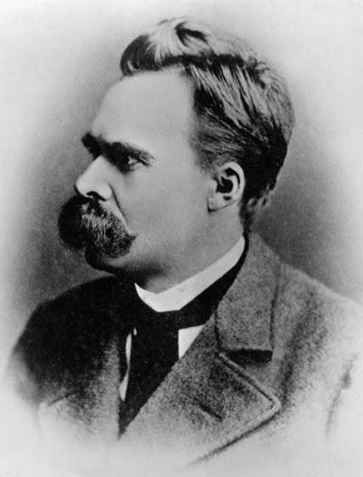
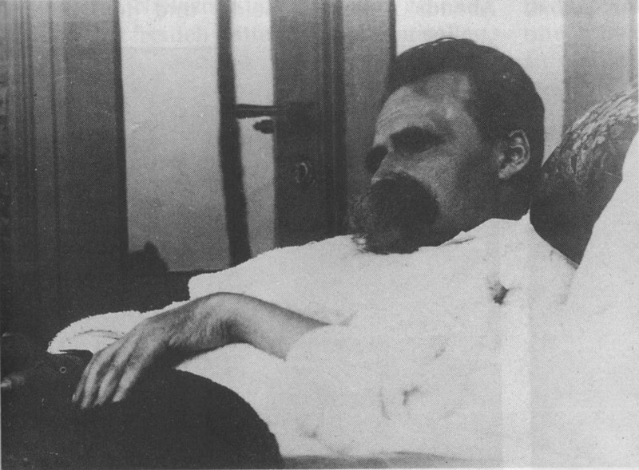

A Filosofia em Rick and Morty
Em dezembro de 2014, o Adult Swim — bloco do canal de desenhos Cartoon Network que, de noite, passa séries animadas voltadas para o público adulto — lançou “Rick and Morty”. O programa conta a história das aventuras de um cientista, Rick Sanchez, com o seu neto, Morty. Logo, a sitcom de ficção científica em animação acabou se tornando, para a surpresa dos próprios criadores, um enorme sucesso, e hoje está disponível no Brasil por streaming na Netflix.
No entanto, através do sofisticado – às vezes, nem tanto – humor que é acompanhado de viagens interdimensionais e referências pop, o desenho aborda questões filosóficas extremamente profundas. É por isso que Rick and Morty deve ser analisado com um olhar mais cauteloso e reflexivo do que o normal. Não se trata de um humor non-sense, mas sim, de uma comédia que explora as maiores questões existenciais com bastante inteligência. E, para a alegria dos fãs no mundo inteiro — após a exibição de um único episódio no dia 1º de abril — , a 3ª temporada volta de vez no dia 30 de julho.
A grande verdade é que, se fosse possível definir os temas mais explorados pelo programa televisivo, seriam a luta contra a falta de sentido do universo e a busca de razões para a existência. Quase todo episódio – senão todos – abordam essas questões existencialistas com contundência. Isso tudo por meio de Rick, o cientista que é pai de Beth, por sua vez casada com Jerry e mãe de Summer e Morty, o outro protagonista ao lado de seu avô.
É claro que Rick and Morty é engraçado por si só, e serve como um excelente passatempo sem precisar que os seus telespectadores entendam o sentido subentendido das piadas feitas e da história da série. Mas eu decidi, por meio desse texto, explorá-las:
Em “A Gaia Ciência”, de 1882, Nietzsche ofereceu à humanidade 383 aforismos que foram os predecessores de seu magnum opus, “Assim Falou Zaratustra”. É nesse livro que o filósofo alemão introduz a fundamental ideia da morte de Deus, que, é importante lembrar, jamais deve ser encarada como uma celebração ateísta. O assassinato de Deus, anunciado no aforismo 125, é o início de uma crise civilizacional sem precedentes: a sociedade antes regida por uma vida e por um sistema de valores da antiga metafísica, no qual a Igreja desempenhava uma importância crucial, deixou de existir.

Rick and Morty explora muito as consequências da civilização que acabou de perder o seu referencial de e para tudo: Deus. Toda uma sociedade que colocava Deus no centro – cujo ápice foi a Idade Média – e que era regida por valores daí oriundos, ruiu. A constatação de Nietzsche não é por acaso: o filósofo viveu no fim do século XIX, no auge do Iluminismo e enquanto uma enorme revolução científica acontecia. Mas o filósofo via isso como uma crise da civilização, que ainda, para ele, não estava pronta para tamanha façanha. Dessa forma, a vasta maioria das pessoas, em sua visão, foram tomadas por um terrível niilismo, de forma a passarem a encar a existência como um fardo, algo que deve ser enfrentado. Assim, até mesmo o tempo passou a ser visto de forma negativa, como algo ruim a se carregar e que deve ser combatida, passado, matado. Afinal, eis toda a ideia de um “passatempo”.
Esse, contudo, é apenas um sintoma da crise desencadeada pela morte de Deus, um evento que, como supracitado, acabou com todo um ciclo metafísico. E Nietzche via o futuro com o que, à primeira vista, parece um olhar pessimista, mas que na verdade, se mostrou realista à luz do século XXI. Ele previu, por exemplo, a ascensão dos regimes totalitaristas e “as maiores guerras”, em uma época na qual a grande maioria das pessoas apostavam na paz duradoura, conquistada após o equilíbrio das potências desenhado no Congresso de Viena, após as Guerras Napoleônicas.

Diz Nietzche, na parte 125 de “A Vontade do Poder”, que “o socialismo* – como a tirania pensada até as últimas consequências dos mais miúdos, dos mais tolos, dos mais superficiais, dos invejosos, dos setenta e cinco por cento atores – é de fato a conclusão das «ideias modernas» e de seu latente anarquismo: mas no ar morno de um bem-estar democrático afrouxa-se a capacidade de concluir, ou de se chegar de fato à conclusão”. Isso tudo para, depois, prosseguir: “Em muitos lugares da Europa pode-se chegar a golpes de mão, a investidas: com relação ao próximo século trata-se fundamentalmente de “rumores” no corpo, aqui e ali, e a Comuna dos parisienses, que também na Alemanha tem os seus oradores de defesa, seus advogados, foi talvez somente uma indigestão mais leve, se a medirmos com o que virá.”
Legenda para o vídeo: Rick diz a Morty não pensar sobre a realidade em que Hitler curou o câncer.
Já na seção de Ecce Hommo “Por que sou um destino”, Nietzsche diz que “haverá guerras como ainda não houve sobre a Terra”. Ou seja, Nietzsche previu o que aconteceria mesmo vivendo em uma época na qual a humanidade acreditava estar diante de um patamar do progresso tão elevado que jamais haveriam novos conflitos armados na Europa – o que as Guerras Mundiais desmentiram, e muito. Isso tudo, para Nietzche, seriam consequências inevitáveis da morte de Deus.
Mas aonde entra melhor Rick and Morty em tudo isso?
Pois bem: as aventuras do cientista ao lado do seu neto demonstraram aos dois como a vida não faz sentido; como o universo é gigantesco; e que os seres humanos são tão insignificantes que cabeças gigantes, para as quais bombas nucleares dão apenas coceira, têm a capacidade de arrastar o Planeta Terra inteiro para um reality-show musical. E com essas crenças “homocêntricas” indo ao chão, a partir do que simbolicamente se denominou a morte de Deus, muitas outras acabam caindo também, uma vez que, basicamente, tudo o que até então se tinha estava enraizado nela, inclusive toda a moral europeia, cristã. Dessa forma, “tudo está permitido”. É uma sociedade criando novos valores.
Vários escritores explorando o tema, e Dostoiévski, em especial, o faz com maestria. Em “Crime e Castigo”, questiona-se a possibilidade de até o ato de tirar a vida de alguém poder ser justificado, aceitável. Afinal, com a morte de Deus, todos os pilares da civilização ocidental ruíram, inclusive o da moral. E Rick and Morty explora exatamente o mesmo tema, principalmente no episódio “Look Who’s Purging Now”, o nono da segunda temporada. Nele, os dois protagonistas do seriado acabam indo parar em um mundo no qual, por um dia no ano, é permitido se assassinar pessoas — uma clara referência ao filme “The Purge”, de 2013, que estrela Ethan Hawke.
No entanto, este episódio — no qual Morty acaba se soltando e matando outros seres vivos, bem como Rick o fez sem precisar se esforçar — não é o único a abordar o tema. Até o piloto da série menciona a questão: Rick ordena a Morty que atire contra agentes policiais, que hesita, por se tratarem de seres vivos; o avô, então, acaba dizendo que na verdade os agentes eram robôs. Dessa forma, convence Morty a atirar, que acaba percebendo se tratarem mesmo de seres vivos. Mas continua atirando.
Dessa forma, Morty, com apenas 14 anos, é alguém descobrindo o Absurdo (termo de Camus que se aplica à teoria de Nietzsche e que será abordado com maior profundida mais tarde), a morte de Deus e a sociedade decorrente deste assassinato. Já Rick, por sua vez, é alguém que conhece essa realidade há anos, e com a consciência dela vive. Morty acaba amadurecendo, após tantos eventos inusitados — como destruir a dimensão em que vivia e ser obrigado a se mudar, em “Rick Potion #9”, enterrando o seu próprio corpo em uma realidade alternativa — , e apesar de ainda se agarrar a antigos valores e crenças, passa o papel de imaturidade e descobrimento acerca da realidade para a sua irmã, Summer.
Apesar disso, Morty ainda tenta se manter íntegro, tendo criado para si novos valores ético-morais. Apesar de o episódio do expurgo mostrar que o garoto não obeteve o êxito que gostaria, em eventos anteriores, o neto de Rick tenta promover boas atitudes, em detrimento de “não ligar para nada”. E, na maioria das vezes, falha. Por exemplo, tenta evitar que Rick venda armas para um assassino de aluguel. Ao não conseguir impedir a troca, mata o cliente de seu avô. No entanto, depois ele descobre que, assim, havia salvado uma criatura – chamada por eles de “peido” – que deseja matar a humanidade inteira. Assim, Morty se vê obrigado a assassinar o gás voador: ou seja, na tentativa de salvar vidas, falha miseravelmente. Tudo no 2º episódio da 2ª temporada.
Outro capítulo a abordar o tema é o episódio 7 da 1ª temporada, “Raising Gazorpazorp”. Nele, Morty tem um filho com uma robô de uma raça alienígena bélica, que só pensa em matar. Aliás, se em algum capítulo o tema da existência está mais nas entrelinhas, neste episódio a abordagem é escancarada: afinal, o protagonista de 14 anos educa o seu filho de bebê até a fase adulta. Em uma cena, Morty diz ao Morty Jr: “Todos tem impulsos e pensamentos ruins, mas nós precisamos saber canalizar eles em coisas construtivas”. O seu filho discorda, e fala: “Mas eu quero assassinar todo mundo que eu vejo!”
Com a imaturidade de Summer e Morty, o telespectador visualiza pessoas ainda agarradas naquilo que Nietzsche, já no aforismo 125, chama de “sombras de Deus”: por ainda serem incapazes de enxergar a morte de Deus – como o homem, ao observar as estrelas, não se dá conta da morte delas, que ainda reluzem, mesmo mortas há centenas de anos – ainda há alguns resquícios do “antigo regime”, seja fisicamente ou na moral. Dessa forma, aquilo que resta da velha ordem, como a própria Igreja – na visão de Nietzsche – e os valores tradicionais, não passam de sombras de Deus.
Ou seja, os seres humanos ainda não estão preparados para a grandiosidade do evento da morte de Deus, o que é evidenciado pelo fato de alguns sequer a enxergarem. Dessa forma — vivendo em uma sociedade guiada em nada, uma vez que o antigo polo já não mais existe — , muitos ficam presos nas mais terríveis formas de niilismo; para estes, a individuação passa a ser vista, de fato, como um sofrimento. Somos parte de uma sociedade criando novos valores, ou, no caso de alguns, vivendo sem eles enquanto isso. Como o personagem Mersault, na obra “O Estrangeiro”, de Albert Camus, acaba personificando.
Mas Nietzsche também apresentou uma solução para isso: a ideia do eterno retorno. Esse pensamento está expresso de maneira clara — antes da explicação ambígua, porém linda, em “Assim Falou Zaratustra” que não pode ser explorada em sua plenitude neste artigo — no aforismo 341 de “A Gaia Ciência”:
- “E se um dia ou uma noite um demônio se esgueirasse em tua mais solitária solidão e te dissesse: «Esta vida, assim como tu a vives agora e como a viveste, terás de vivê-la ainda uma vez e ainda inúmeras vezes; e não haverá nela nada de novo, cada dor e cada prazer e cada pensamento e suspiro e tudo o que há de indizivelmente pequeno e de grande em tua vida há de te retornar, e tudo na mesma ordem e seqüência – e do mesmo modo esta aranha e este luar entre as árvores, e do mesmo modo este instante e eu próprio. A eterna ampulheta da existência será sempre virada outra vez – e tu com ela, poeirinha da poeira!» (…)”
Para Nietzsche, haveriam duas possíveis respostas: o medo profundo e o ódio pelo demônio ou louvar a este como um Deus, e o pensamento dessa possibilidade como algo divino. A verdade é que, a partir da ideia do eterno retorno, o filósofo cria uma lição de vida. Como ele mesmo coloca, “se esse pensamento adquirisse poder sobre ti, assim como tu és, ele te transformaria e talvez te triturasse; a pergunta, diante de tudo e de cada coisa: «Quero isto ainda uma vez e ainda inúmeras vezes?» pesaria como o mais pesado dos pesos sobre teu agir!”. E como Nietzsche deixa claro em seus póstumos, esta seria uma visão bastante otimista: ao se implementar a ideia do eterno retorno na vida, a dedicação precisa ser naquilo que se ama, e que desejar repetir infinitas vezes seria uma dádiva, não um castigo.
Legenda para o vídeo: Rick, Morty e Summer apenas se divertindo enquanto navegam pelo espaço sideral.
Dessa forma, ao enxergar o tempo desta maneira, cada pequeno instante deve valer a pena, afinal, vai se repetir inúmeras vezes. Rick e Morty acenam para essa direção inúmeras vezes. Como no episódio em que o avô quer passar o dia todo brincando no fliperama com seu neto; quando Rick “para o tempo” por seis meses e usa isso para se divertir com Summer e Morty; ou como no episódio em que o cientista só quer ficar assistindo televisão com a família.
Mas não o tempo todo.
Albert Camus – algumas décadas mais tarde do alemão antes mencionado –, trataria de temas bastante similares, principalmente a partir da formulação de “O Absurdo”, definido como o conflito entre a tendência humana de buscar significado inerente à vida e a inabilidade humana para encontrá-lo. Uma clara consequência da morte de Deus, que retirou o centro configurador de sentido à vida. Para ele, haveriam três possíveis soluções: o suicídio, descartado pelo autor franco-argelino por considerar essa saída uma solução ilusória, que apenas aparenta ser libertadora e, na realidade, é uma fuga do Absurdo; a religião, considerada por Camus um suicídio filosófico, também ilusório; ou aceitar o absurdo como inevitável – algo como o “amor fati” nietzschiano, mas ainda maior – e poder viver livremente, criando sentidos individuais para a existência, apesar de, para ele, dever ser mantida sempre uma distância irônica entre esse significado inventado e o conhecimento do Absurdo, de forma que o significado inventado não tome o lugar do Absurdo. A beleza que as pessoas encontram na vida já a fazem valer a pena.
E é a partir dessa ideia do absurdo – um paradoxo humano percebido no ato incessante de buscar significado em um mundo indiferente e desprovido de sentido – que Camus escreveu as suas principais obras: “O estrangeiro”, romance de 1942; e “O Mito de Sísifo”, ensaio filosófico lançado no mesmo ano.
Legenda: Animação famosa na Internet do famoso Mito de Sísifo, que Camus se apropria para explicar a sua tese filosófica.
A obra “O estrangeiro” conta a história de Mersault, um homem incapaz de lidar com o Absurdo e que, como consequência da crise civilizacional anunciada por Nietzsche, virou um símbolo do pior tipo de niilismo. Um estado de anomia, como Durkheim primeiro formulou. Mersault é incapaz de se importar com qualquer coisa, desde família até trabalho, bem como de demonstrar empatia ou emoções. Perguntado se desejava uma promoção em Paris, ele falou que se assim quisessem ele poderia ir, por exemplo. Simplesmente porque o personagem genuinamente mostra não se importar com nada daquilo, com a sua vida ou a dos outros, o que acaba lhe fazendo se tornar amigo de Raymund, um terrível cafetão.
Essa inabilidade em mostrar qualquer motivação de vida ou sentido para esta é demonstrada no primeiro parágrafo do romance que, sem exageros, é talvez um dos mais impactantes da literatura ocidental:
“Aujourd’hui, maman est morte. Ou peut-être hier, je ne sais pas. J’ai reçu un télégramme de l’asile : « Mère décédée. Enterrement demain. Sentiments distingués. » Cela ne veut rien dire. C’était peut-être hier.”
(“Hoje, morreu mamãe. Ou talvez, ontem, não sei bem. Recebi um telegrama do asilo: sua mãe faleceu. Enterro amanhã. Sentidos pêsames. Isto não esclarece nada. Talvez tenha sido ontem.”)
Ou seja: diante da morte de sua mãe, tamanha é sua indiferença que o personagem reclama somente sobre como o telegrama foi escrito, em vez de com o fato em si. Essa indiferença — que o fez não chorar e nenhuma emoção demonstrar no enterro de sua mãe e ir ao cinema em seguida – faz com que, um dia, quando em conjunto a Raymund em uma praia, o irmão de uma das garotas forçadas a se tornarem prostitutas pelo cafetão – chamado de “o árabe” – aparece para tirar satisfação com Raymund. No entanto, Mersault acaba por matá-lo, dando quatro tiros no corpo morto, mesmo que desprovido de razão para aquilo fazer. Ao tentar achar justificativas, cita a incidência do sol. É um personagem que só vai entender e aceitar o Absurdo, de fato, ao fim do livro, antes de ser executado pelo Estado após a condenação à pena de morte, em um trecho no qual chega à conclusão de que “o universo é muito fraterno”.
Rick muitas vezes age como Mersault, mas não por incapacidade de compreensão do Absurdo. Mas sim porque o cientista não consegue achar um sentido para a sua existência. Acaba vivendo em um profundo niilismo, de vez em quando, por ainda não ter encontrado uma razão para viver. Apesar de, de vez em quando, caminhar nessa direção. Como este artigo analisará daqui a pouco.
Legenda: Rick diz a Morty que o amor não passa de “uma reação química que compele os animais a se reproduzirem”.
Já a obra filosófica de Camus mais conhecida, O Mito de Sísifo, trabalha com a ideia do Absurdo de maneira mais convencional. Assim, o filósofo franco-argelino acaba fazendo uso do mito que dá nome ao livro pra explicar a sua filosofia. Não podia ter escolhido um personagem melhor: Sísifo era tão astuto e apaixonado pela experiência vital que, na mitologia grega, enganou a morte duas vezes. Na primeira — após despertar a fúria de Zeus por ter feito com que Asopo, um deus-rio, desse à cidade que governava, Éfira, uma fonte em troca de informações que detinha — acorrentou Tânato, o deus da Morte, após enganá-lo através da sedução. Na segunda vez, Sísifo, quando morto, pediu à sua esposa que não o enterrasse. Assim, ao chegar ao Reino dos Mortos, contou a Hades que a sua mulher não havia tido a decência de enterrá-lo e pediu um dia a mais de vida para se vingar. Foi quando enganos os deuses pela segunda vez, acabando por morrer de velhice. No entanto, uma vez morto de fato, Sísifo recebeu o que os deuses consideraram um terrível castigo: apesar de terem lhe dado a eternidade, a deram sob a mais tenebrosa forma.

“Os deuses tinham condenado Sísifo a rolar um rochedo incessantemente até o cimo de uma montanha, de onde a pedra caía de novo por seu próprio peso. Eles tinham pensado, com as suas razões, que não existe punição mais terrível do que o trabalho inútil e sem esperança”, como pôs no papel Camus. Completa ele: “Sísifo é o herói absurdo. Ele o é tanto por suas paixões como por seu tormento. O desprezo pelos deuses, o ódio à Morte e a paixão pela vida lhe valeram esse suplício indescritível em que todo o ser se ocupa em não completar nada. […] Ao final desse esforço imenso medido pelo espaço sem céu e pelo tempo sem profundidade, o objetivo é atingido. Sísifo, então, vê a pedra desabar em alguns instantes para esse mundo inferior de onde será preciso reerguê-la até os cimos. E desce de novo para a planície.”
“Se este mito é trágico, é porque o seu herói é consciente. Onde estaria, com efeito, a sua tortura se a cada passo a esperança de conseguir o ajudasse? O operário de hoje trabalha todos os dias da sua vida nas mesmas tarefas, e esse destino não é menos absurdo. Mas só é trágico nos raros momentos em que ele se torna consciente. Sísifo, proletário dos deuses, impotente e revoltado, conhece toda a extensão da sua miserável condição: é nela que ele pensa durante a sua descida.”
Sísifo está fadado a um trabalho inútil e sem sentido. Seus esforços de levar a rocha são rapidamente neutralizados pelo retorno à estaca zero. Na descida, Sísifo pensa a respeito de suas ações e toma consciência de que são desprovidas de sentido, o que ele chama de “absurdo”. Camus diz que o mito só é trágico devido a essa consciência de Sísifo. Se não refletisse a respeito, não haveria tragédia.
Quando nos damos conta do absurdo da vida, da falta de sentido em nossas ações, há espaço para a reflexão sobre se ela vale a pena ser vivida ou não.
Ele diz: “no instante sutil em que o homem se volta para a sua vida, Sísifo regressando para a sua rocha, contempla essa sequência de ações desvinculadas que se tornou seu destino, criado por ele, unido pelo olhar de sua memória (…)”.
Camus acredita que se matar é uma espécie de confissão: “confessar que fomos superados pela vida ou que não a entendemos”, ou “confessar que isto não vale a pena. Viver, naturalmente, nunca é fácil. Continuamos fazendo os gestos que a existência impõe por muitos motivos, o primeiro dos quais é o costume. Morrer por vontade própria supõe que se reconheceu, mesmo instintivamente, o caráter ridículo desse costume, a ausência de qualquer motivo profundo para viver, o caráter insensato da agitação cotidiana e a inutilidade do sofrimento”.
Mas há otimismo nesse filósofo. Ele não vê o suicídio como uma saída, ao contrário, apenas o encara como uma reflexão necessária – “o perigo é não refletir a respeito” – e a partir dela, voltarmos a Sísifo com outros olhos. Ao invés de vermos esse homem preso num trabalho sem sentido e inútil, é necessário mudar o ponto de vista e contemplá-lo como um homem interagindo com um universo particular e rico. A montanha é sua casa, “cada grão dessa pedra, cada fragmento mineral dessa montanha cheia de noite forma por si só um mundo”.
Camus conclui que não há sentido no trabalho, assim como não há sentido em viver, mas amamos a vida mesmo assim. E que realmente deveria ser desta maneiras. “Esse universo enfim sem dono não lhe parece estéril nem fútil. Cada grão dessa pedra, cada estilhaço mineral dessa montanha cheia de noite, forma por si só um mundo. A própria luta para atingir os píncaros basta para encher um coração de homem. É preciso imaginar Sísifo feliz”.
Toda a formulação do herói absurdo remete ao personagem de Rick, alguém que “conhece toda a extensão da sua miserável condição”. No entanto, há um problema nessa formulação: Rick não é como Sísifo da forma que Camus enxerga o mito. Ele não está feliz. No episódio “Ricksy Business”, por exemplo — o último da primeira temporada — , o Pessoa-Pássaro (Birdperson), melhor amigo de Rick até então, revela a Morty que o bordão de seu avô “Wabba Lubba Dub Dub ”, na verdade, tem sentido e significa: “Eu estou sofrendo muito, por favor me ajudem”.
Essa tese é corroborada em diversos aspectos e eventos do seriado. Por exemplo, o alcoolismo, que poderia ser enxergado por Nietzsche como uma forma de escapatória da individuação desnecessária, em vez de encarar o “Absurdo”, a realidade. Além disso, e mais importante, Rick chega a tentar o suicídio, no terceiro episódio da segunda temporada, após se separar de Unity mais uma vez.
A tentativa de suicídio.
Ao tentar se matar, Rick não estava, evidentemente, confessando a incompreensão da vida. Mas, em vez disso, acreditando que nada valia a pena após ver o sentido por ele criado ruir. A tentativa de suicídio é no 3º episódio da 2ª temporada; ou seja, apenas dois episódios depois de Rick se sacrificar por Morty — mesmo que eventualmente conseguindo sobreviver depois — e três após ter, supostamente, abandonado o bordão “Wabba Lubba Dub Dub” ao se divertir passando tempo com os netos. O cientista mais brilhante de todo o universo viu a razão que ele havia construído para continuar a vida, a busca e a luta pelo amor, parecer ruir.
Legenda: Rick se sacrificando por Morty.
É importante ressaltar que, ao contrário do que muitos dizem por aí, Rick claramente não adota totalmente o niilismo. Ele está triste, é claro, mas isso se deve ao fato de ele ainda estar em busca de um sentido à vida. Já ficou muito claro que o avô de Morty vê importância em sua família – apesar do que ele diz, chega a se sacrificar pelo seu neto, costuma buscar agradá-lo e tem uma foto com ele bebê, vista na casa do Pessoa-Pássaro – e que ele luta contra a Federação Galática, e isso precisa ter algum motivo ideológico. Segundo o Pessoa-Pássaro, no último capítulo da 2ª temporada, o terrorismo contra a Federação Galática era “em nome da liberdade”. Assim sendo, sabemos que Rick pelo menos tinha algum propósito maior, pois luta contra o Império. Ou melhor, lutava, antes de destruir a Federação no 1º episódio da 3ª temporada.
Se as suas ações parecem paradoxais, isso acontece porque o personagem assim o é também. Rick se deu conta de que a vida não faz sentido, mas ainda está em busca de o que fazer com essa informação. A maneira de deixar a sua vida, em vez de um sofrimento — como via Schopenhauer — , uma dádiva. E, em “Rickshank Redemption”, o personagem dá fortes indícios do caminho que deve seguir: focar nas pequenas coisas, nos detalhes da vida, enquanto a contempla. Algo que ficou simbolizado pelo molho “Szechuan”, do McDonald’s. E ele vai buscar isso, mesmo que leve nove temporadas, como o próprio Rick disse enquanto negava se importar com o neto e toda a sua família em mais uma ocasião de tantas no seriado.
“Eu só resgatei você e sua irmã porque se não a Beth não me aceitaria (…) Eu vou encontrar mais daquele molho Szechuan porque esse é o meu objetivo! (…)”
O que Rick precisa encontrar é a felicidade em viver, e isso apenas acontecerá quando ele se der conta das suas motivações e passar a reservar tempo para aquilo que ama. Ao tentar se matar, o cientista estava vendo a experiência vital como sofrimento, de forma que a morte se tornaria redentora. Algo totalmente oposto ao que Nietzsche acreditava. No aforismo 340 de A Gaia Ciência, por exemplo, ao notar que Sócrates teria uma visão similar – através da frase “Críton, lembre que a Esculápio devemos um galo”, proferida logo antes de sua morte –, o filósofo alemão diz: “Temos de superar até mesmo os gregos!”. Está na hora de Rick chegar à mesma conclusão.
Afinal, seria a mesma de Camus também. O filósofo franco-argelino dizia que, uma vez aceita a ideia de que nada faz sentido e que o universo é indiferente, “tudo” – a beleza da vida para ser contemplada – é o sentido da vida. Cada momento, cada instante. E Rick pode continuar fazendo o que, de certa forma, parece tentar: realizar isso através da ciência, se aventurando com os seus netos e ficando feliz na companhia destes. Afinal, uma vez reconhecida a aleatoriedade do universo e a falta de sentido na vida, Rick está livre para achar novos sentidos à sua vida. Falta encontrá-los de verdade.
Morty, por sua vez, é alguém que parece enfrentar o aprendizado do mundo de uma maneira muito mais efetiva. Agarrado às suas convicções, às vezes ele parece ter adotado a ideia do eterno retorno de Nietzsche, usando o seu tempo para aquilo que ama. Tal fato fica mais do que explícito em uma das mais emblemáticas passagens de Rick and Morty, no episódio “Rixty Minutes”, o 8º da 1ª temporada. Enquanto os dois protagonistas, conscientes de que a vida deve ser contrastada ao nada e não ao que poderia ser – ou seja, adeptos à tese nietzschiana e não schopenhaueriana, e, por conseguinte, do eterno retorno e do amor fati (o amor ao destino) – assistem TV, do outro lado da sala, Jerry, Beth e Summer disputam um par de óculos que os permitem visualizar as realidades alternativas de cada um.
Como consequência do aparelho, Summer se dá conta do Absurdo: ela descobre ser fruto do acaso, de uma gravidez não planejada, o que a faz se questionar acerca da falta de lógica por trás da vida, a indiferença do universo e o sentido da existência. Eis que Morty, preocupado com o estado da irmã, aparece para consolá-la. Após mostrar a ela aonde o seu próprio corpo está enterrado no jardim, conclui:
“Ninguém existe por um propósito; ninguém pertence a nenhum lugar; todos vão morrer. Venha assistir TV.”
É uma consequência não imediata do conhecimento da dura realidade acerca da falta de sentido da vida e da indiferença do universo, que torna cada pequeno momento em algo muito mais valioso.
No entanto, em outros momentos, Morty demonstra raiva, ódio. Principalmente no último dos episódios lançado, o de início da 3ª temporada, “Rickshank Redemption” e no do expurgo. Esses problemas de raiva podem ser vistos, na minha visão, como uma crise de valores desencadeada pela morte de Deus. Mas também da mesma forma que se encara o paradoxal compartamento de Rick: ambos ainda estão descobrindo o que fazer com a informação acerca da indiferença do universo.
Já o pai de Morty, Jerry Smith – um dos personagens mais engraçados da série – também não está ali por acaso. O próprio Camus afirma que a história de Sísifo só pode ser encarada como tragédia caso o personagem tenha consciência da irrelevância de seu ato. Jerry, contudo, não tem. Em vez de entender o Absurdo, Jerry ignora completamente a falta de sentido na vida e a indiferença do universo, colocando em outro patamar coisas irrelevantes, como comprar moedas de uma edição especial, reproduzir algumas cenas de Titanic e jogar em seu Ipad. Mesmo sabendo ser um fracasso – afinal, ele é desempregado, odiado pela esposa e o melhor dia de sua vida sequer foi real — , o personagem de Jerry consegue viver de maneira satisfatória. Pelo menos até onde se sabe, uma vez que os acontecimentos do 1º episódio da 3ª temporada fazem com que, no final, Beth se separe de Jerry. Mas pelo que se vê no restante do seriado, ele está razoavelmente feliz – mesmo que, na visão de Camus, praticando uma espécie de suicídio filosófico.
Essa “visão de mundo” — ou falta dela — de Jerry é exposta, mais de uma vez, em Rick and Morty de maneira muito clara. Um exemplo é na cena na qual Rick acaba de tentar se matar, quando é possível perceber Jerry limpando a garagem – algo insignificante – satisfeito. Ou, após o episódio em que ele, por não aceitar a verdade de que Plutão não é um planeta, diz a Morty: “Algumas pessoas não conseguem lidar com a verdade. Especialmente bobões como eu”.
Rick and Morty, além de explorar as questões da existência humana em seus protagonistas que residem no mesmo núcleo familiar, as explora em praticamente todo episódio através do enredo de cada um e personagens de menor relevância. Por isso mesmo, é possível citar vários exemplos sem muito esforço sobre o uso de personagens com o único intuito de explorar esses temas.
Abradolf Lincoler – uma mistura de Adolf Hitler e Abraham Lincoln criada por Rick; os Meeseeks – que se voltam contra quem os trouxe à vida; a câmara GoPro robotizada pelo cientista que dá nome ao programa que apenas existe para “passar manteiga”; Zeep Xanflorp, o cientista de um universo em miniatura criado por Rick – e toda a trama desse episódio, “MicroVerse Battery”.
Robô: “Qual o meu propósito?”
Rick: “Você passa manteiga!”
Robô: “Ó, meu Deus…”
Rick: “Bem-vindo ao clube, amigo.”
O episódio dos universos em miniatura é um dos que abordam o tema de forma mais direta. É revelado, no início da trama, que Rick usa o que ele chama de “micro-universo” como bateria para gerar a energia da qual a sua nave espacial depende. No entanto, o cientista nota que a produção havia diminuído, e vê a necessidade de visitar o mundo que criou. Lá, encontra Zeep, um cientista que também confeccionou um universo em miniatura – chamado de “mini-universo” – como fonte energética.
Rick vê a necessidade de parar aquilo, uma vez que o universo é importante para a manutenção de sua nave, e entra em conflito com Zeep, que acaba descobrindo o porquê de o seu mundo existir. Acaba, assim, por reagir de forma raivosa ao seu “Criador”. Essa é uma das maneiras de encarar o ilogismo que cerca a existência, apesar do episódio mostrar uma outra possibilidade ainda mais assustadora, através do personagem de Kyle.
Kyle é o cientista do universo em miniatura de Zeep, que assim como o criador de seu mundo e Rick, tem a ideia de gerar energia através do que chamou de “universo pequenino”, ou no original em inglês, Teenyverse. Ao descobrir a realidade sobre a sua existência – de que o seu mundo é tão insignificante que é a bateria de uma bateria –, Kyle decide pelo suicídio. Uma saída que Camus, como já vimos, abominava.
Já o caso dos Meeseeks é uma das mais geniais metáforas construídas em Rick and Morty: os personagens representam justamente o oposto de como a humanidade se comporta – ou deveria se compartar.
Eles dizem que, para os Meeseeks, a “existência é sofrimento”, e que “só querem morrer”. Isso porque essa criatura morre após realizar um desejo, o seu único propósito em vida. Quando a existência para de ter sentido – pois o seu único propósito parece não poder ser realizado – os Meeseeks se perdem, não sabem o que fazer e ficam revoltados, com raiva. E tentam assassinar aquele que é o responsável por os trazer à vida, só para cumprir o único objetivo deles: a morte.
Uma imagem que é, justamente, o contrário da que Rick and Morty passa. O seriado mostra aos espectadores, o tempo todo, que é preciso aceitar o fato de que a vida não faz sentido. É difícil, de fato; é uma crise civilizacional, também; mas é preciso se imaginar Sísifo feliz, como Camus teorizou. Os Meesseks fazem tudo “no inverso”: quando descobrem a possibilidade de não haver um propósito, se desesperam e estão loucos em busca da morte. Ao contrário de Nietzsche, por exemplo, que através de Zaratustra declara: “Eu te amo, ó eternidade!”. Uma vez entendido o ilogismo que nos cerca, significa que é hora de encontrar os nossos próprios sentidos para vivermos aqui e agora. Fazer o que amamos e passar tempo com quem queremos estar. Essa é a mensagem, a filosofia, de Rick and Morty.
Rick and Morty, em suma, é um dos melhores programas de televisão disponíveis do momento. Mostrando que a ficção cientíica – através da imagem do mundo com um universo gigantesco e infinitas dimensões e realidade – pode revelar a fragilidade humana como nenhum outro gênero literário ou cinematográfico, o seriado apresenta questionamentos existenciais de suma importância para a vida e a filosofia.

Rick, Morty e toda a família Sanchez-Smith se divertindo em uma viagem.
Tudo isso, convenhamos, com um humor espetacularmente engraçado. E que, muitas vezes, é só comédia:
Legenda:Rick: “Lam-lam-lamba minhas bolas! (risos)”
Dan Harmon e Justin Roiland criaram uma obra-prima. Então, se você é um fã, não se esqueça que no dia 30 de julho a 3ª temporada começa para valer; e se você não conhece tão bem assim o seriado, coloque a maratona em dia.
Porque esse sim é um programa que merece ser visto.
Por fim, faço das palavras de Morty – que sintetizam o ensinamento da série – as minhas:
“Ninguém existe por um propósito; ninguém pertence a nenhum lugar; todos vão morrer. Venha assistir TV!”